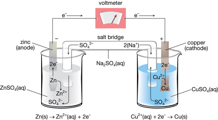

Module 4—Batteries and Balance
 Read
Read
In the investigation you just completed you identified the parts of a voltaic cell and, in combination with your pre-lab work, you identified reactions that involve different components of the cell. Read page 622 and the top of page 623 of the textbook to learn more about other necessary components of voltaic cells and about how voltaic cells are represented.
 Try This
Try This
TR 4. A silver-copper voltaic cell is constructed.
- Draw a diagram of the cell. Label the location of the following components: Ag(s), AgNO3(aq), Cu(s), Cu(NO3)2(aq), salt bridge, electrical wire.
- Write the reduction half-reaction occurring in this cell.
- Write the oxidation half-reaction occurring in the cell.
- Label the anode and cathode of the cell.
- Use an arrow to indicate the direction of the flow of electrons along the electrical wire.
TR 5. The salt bridge, or porous boundary, is an essential part of a voltaic cell. Since electrons are exchanged between the half-cells, ions must also be exchanged in order to conserve charge.
- Predict the direction of the flow for positively charged ions (cations) with respect to the cathode half-cell.
- Predict the direction of the flow for negatively charged ions (anions) with respect to the anode half-cell.
 Watch and Listen
Watch and Listen
The Voltaic Cell
View the animation “The Voltaic Cell.” Use the information in the animation to check your answers to questions TR 4 and TR 5. You may also wish to read pages 623–624 in the textbook for another description of the operation of, and changes occurring within, a silver-copper voltaic cell.

Read
Voltaic cells can also be constructed with half-cells that do not involve a metal as a reactant. An inert electrode can be used if a solution contains the strongest oxidizing agent or the strongest reducing agent in an aqueous form. The term inert means that the electrode cannot react during the cell’s operation. An electrode is only necessary to be an electrical conductor—to allow for the movement of electrons in a half-cell.
Read pages 625–626 in the textbook to learn how an inert electrode is used in a voltaic cell. Work through “Communication example 1” on page 625 to check your ability to represent the use of an inert electrode in a voltaic cell.
 Self-Check
Self-Check
SC 12. Complete “Practice” questions 1–9 on page 626 of the textbook.